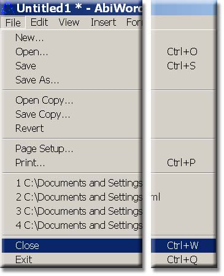

You are now ready to close your document. To do this select "File" and from the drop down menu click on "close".

Please see other functions under one of the other two tutorials demonstrated in this task-oriented tutorial